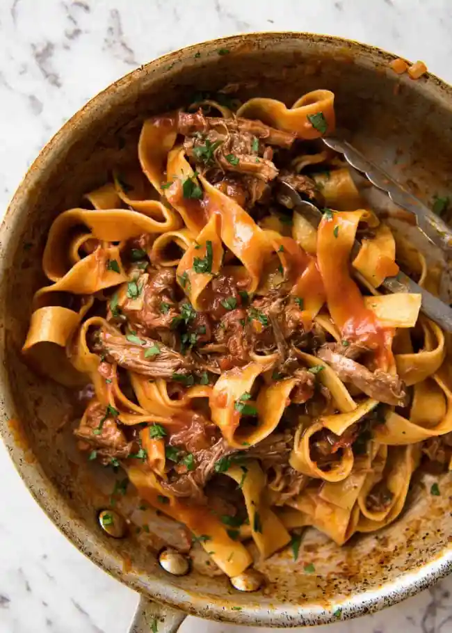
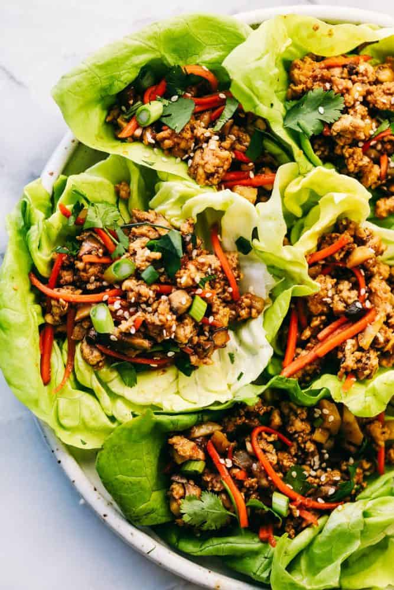
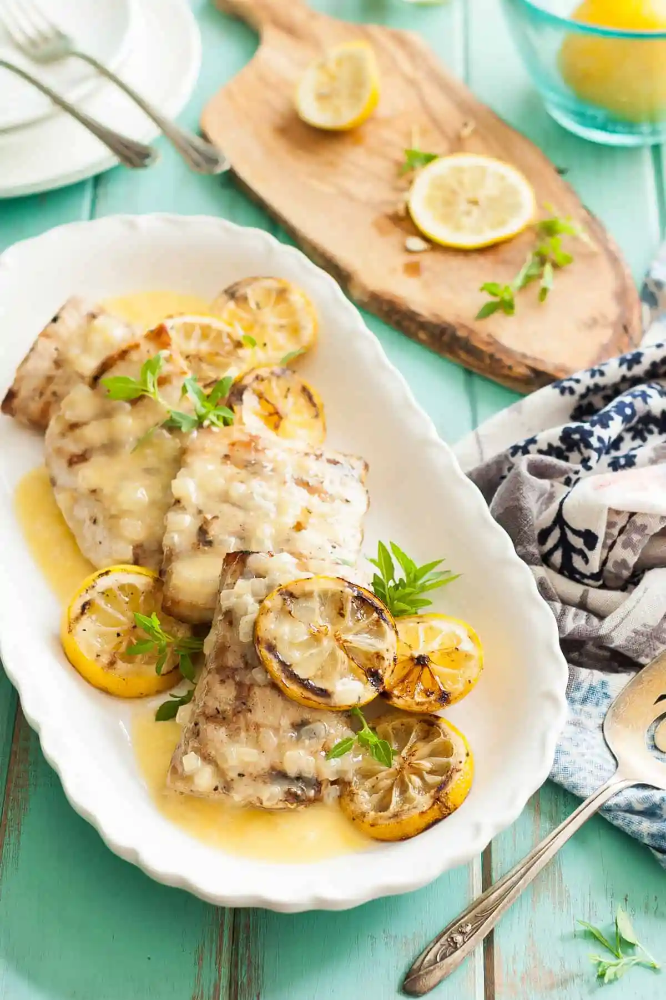
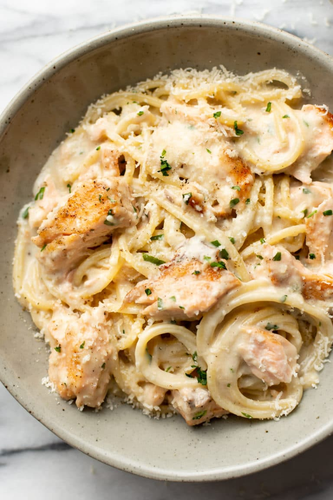

Slow Cooked Shredded Beef Ragu Pasta

Slow Cooked Shredded Beef Ragu Pasta - Ingredients
- Ragu
- 1.2kg / 2.5 lb chuck beef or other slow cooking beef cut, cut into equal 4 pieces
- 1 tbsp salt
- Black pepper
- 3 tbsp olive oil , separated
- 3 cloves garlic , minced
- 1 onion , diced
- 1 cup carrots , diced
- 1 cup celery , diced
- 800g / 28oz crushed canned tomatoes
- 3 tbsp tomato paste
- 2 beef bouillon cubes , crumbled
- 1 cup / 250ml red wine , full bodied (like merlot, cabernet sauvignon), or sub with beef broth/stock
- 1 1/2 cups / 375 ml water
- 3/4 tsp dried thyme or 3 sprigs fresh thyme
- 3 dried bay leaves
- To Serve
- 1 lb /500g dried pappardelle , or other pasta of choice
- Freshly grated parmesan cheese or parmigiano reggiano
- Fresh parsley , finely chopped (optional)
Slow Cooked Shredded Beef Ragu Pasta - Preparation method
- Pat beef dry and sprinkle with salt and pepper
- Sear Beef: Heat 1 tbsp olive oil over high heat in a heavy based pot. Add beef and sear each piece aggressively on all sides until very browned (3 - 5 minutes in total), then remove onto a plate.
- Turn stove down to medium low and add remaining 2 tbsp of olive oil.
- Soffrito: Add garlic and onion and sauté for 2 minutes. Then add the carrots and celery and sauté slowly for 5 minutes.
- Add remaining Ragu ingredients and return the beef to the pot (including pooled juices). Turn the stove up and bring it to a simmer, then turn it down to low so it's bubbling very very gently.
- Slow cook: Cover the pot and let it cook for 2 hours or until beef is tender enough to shred.
- Shred: Remove beef then coarsely shred with 2 forks. Return beef to the pot. Simmer for 30 minutes until sauce is reduced and thickened - beef will soften slightly more during this step.
- Final season: Do a taste test and adjust the seasoning to your taste with salt and pepper. ALSO, add 1/2 tsp sugar if sauce is a bit sour for your taste. Place the lid on and set aside until ready to serve
- To Serve
- Bring a very large pot of water with 1 tbsp of salt to the boil.
- Add pasta and cook for 1 minute less than the recommended cooking time as per the packet instructions.
- Meanwhile, place 5 cups of the Ragu in a very large fry pan, dutch oven or use 2 normal size fry pans. Heat over high heat while the pasta is cooking.
- When the pasta is ready, transfer it directly from the pot into the fry pan using tongs.
- Add 3/4 cup of pasta water into the fry pan.
- Gently toss the pasta for 1 to 2 minutes, until the sauce water evaporates and leaves you with a thick Ragu sauce that coats the pasta.
- Serve with plenty of freshly grated parmesan, or even better, with parmigiano reggiano.
Asian Turkey Lettuce Wraps

Asian Turkey Lettuce Wraps - Ingredients
- Ground turkey or ground beef.
- Shredded carrots
- Mushrooms: Chop these up into small pieces.
- Water chestnuts: add crunch to the wraps.
- Green onions: The green onions fill these lettuce wraps with flavour.
- Garlic clove: If you don’t have a fresh garlic clove on hand then you can use minced garlic instead. ½ tsp equals about 1 clove of garlic.
- Hoisin sauce
- Soy sauce
- Rice wine vinegar
- Red chili paste: This adds in a little heat and some delicious flavour
- Butter lettuce leaves: You can also use Boston or Iceberg lettuce instead.
Asian Turkey Lettuce Wraps - Preparation method
- In a medium sized skillet over medium high heat, add the ground turkey.
- Cook and crumble until it is almost cooked throughout.
- Add carrots, mushrooms, water chestnuts, green onions and garlic.
- Continue to cook for 1-2 minutes until turkey is cooked and veggies are tender.
- Add the hoisin sauce, soy sauce, rice wine vinegar, and chili paste.
- Stir and let simmer for 1-2 minutes.
- Serve on butter lettuce leaves.
Grilled Mahi Mahi In A Lemon Butter Sauce

Grilled Mahi Mahi In A Lemon Butter Sauce - Ingredients
- 6 (5-6 ounce) Mahi Mahi fillets
- Real Salt
- 2 Tbl Extra Virgin Olive Oil
- 6 Tbl Butter
- ¼ Onion (minced)
- ½ tsp Garlic (minced)
- ¼ cup Chicken Stock
- 2 Lemons
Grilled Mahi Mahi In A Lemon Butter Sauce - Preparation method
- Preheat a grill to medium/high heat.
- Place the Mahi Mahi fillets in a bowl and sprinkle salt and pepper over the top of the fish, to taste.
- Drizzle the olive oil over the fish and turn the fish to coat.
- Place the fish on the hot grill and let cook for about 3-4 minutes per side (depending on thickness), turning carefully. You will know it is done when it flakes easily with a fork.
- Remove from the grill to a serving dish.
- While the fish is cooking, melt 1 tablespoon of the butter over medium/high heat in a small saute pan.
- Add the minced onion to the butter and saute for about 2 minutes, or until softened.
- Add garlic and saute for an additional 30 seconds.
- Add the chicken stock to the pan and let simmer until reduced by half.
- Add the lemon juice and cook for 2 more minutes.
- Remove the pan from the heat.
- Add the remaining butter, 1 tablespoon at a time, to the sauce and stir in until the sauce thickens and becomes glossy.
- Add salt to taste, if desired.
- Pour butter sauce over the top of the mahi mahi and serve.
Salmon Pasta with a Creamy Garlic Sauce

Salmon Pasta with a Creamy Garlic Sauce - Ingredients
- 8 ounces spaghetti or other pasta uncooked
- 1/2 pound fresh salmon
- 1/4 teaspoon onion powder
- Salt & pepper to taste
- 1 tablespoon olive oil
- 1 tablespoon butter
- 1 tablespoon flour
- 3 cloves garlic minced
- 1/2 cup dry white wine or chicken broth
- 3/4 cup heavy/whipping cream
- Juice from 1/2 medium lemon (about 1 tbsp)
- 1/2 cup freshly grated parmesan cheese
- 1 tablespoon fresh parsley chopped
Salmon Pasta with a Creamy Garlic Sauce - Preparation method
- Boil a large salted pot of water for your pasta and cook it al dente according to package directions.
- Meanwhile, season the salmon with the onion powder and some salt & pepper.
- Add the olive oil and butter to a skillet over medium-high heat. Once it's hot, cook the salmon for a couple of minutes on each side.
- Transfer the salmon to a plate and set aside.
- Reduce the heat to medium. Add the flour to the skillet and cook for about 30 seconds, stirring nearly constantly.
- Whisk in the garlic and wine (let it bubble for 20 seconds or so), followed by the cream and lemon juice.
- Once the sauce is smooth, whisk in the parmesan.
- Add the salmon back in the pan and break it up with your spoon so it's in bite-size pieces. Gently mix it in with the sauce. Cook for an additional 3-5 minutes or so until the sauce is thickened and salmon is cooked through.
- Drain the pasta and add it to the skillet, along with about 1 tablespoon of the water you cooked the pasta in (or more if you want to thin the sauce) as well as the parsley. Gently toss the sauce and pasta. Serve immediately with extra parmesan cheese if desired.